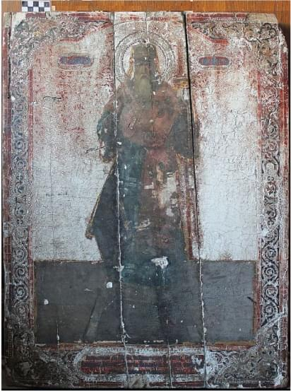

Sommaire:
Sélection de travaux de restauration
Peinture sur support toile
St. Apôtre et évangéliste Jean le Théologien
XIXe siècle, peinture à l'huile sur toile, 92x67 cm.
Étapes de restauration
- Refixage
- Réparation de déchirures et aplanissement de déformation
- Nettoyage de couche picturale, allègement du vernis
- Reconstruction de lacunes et retouches
- Vernissage
Avant restauration

Après restauration

Détails aprés restauration
Détails aprés restauration
En cours de restauration
En cours de rentoilage
Après restauration
Peintures à l'huile sur support bois
Mandylion
Image d’Édesse XIXe siècle, peinture à l'huile sur panneau de bois, 30x25 cm.
Étapes de restauration
- Refixage général
- Nettoyage progressif et suppression du vernis jauni et oxydé
- Consolidation des soulèvements, réintégration des lacunes, retouches
- Application de vernis protecteur durable
Avant restauration
Après restauration
Détails aprés restauration

Détails aprés restauration
Saint Alexis métropolite de Moscou
L'icône a été peinte en l'honneur de la naissance de l'héritier du Tsarévitch Alexei 12 août 1904, peinture à l'huile sur panneau de bois, 72x51 cm.
Étapes de restauration
- Refixage à la colle d’esturgeon
- Réparation du support en bois
- Nettoyage et revalorisation les couleurs originelles de l'oeuvre
- Reconstruction des lacunes et les manques de peinture, la retouche
- Vernissage
 Avant restauration
Après restauration
Détail avant restauration
Détail après restauration
Icône des saints Alexis du métropolite de Moscou
Lion de Catania, Eudoxie, Anne, Sainte Alexandra de Rome XIX siècle, peinture à l'huile sur panneau de bois, 32x27 cm.
Étapes de restauration
- Refixage général
- Nettoyage, allègement du vernis des surfaces peintes à l’aide de solvants
- Masticage des lacunes et retouche
- Application de vernis final
Avant restauration
Après restauration
Détails aprés restauration
Icône des saints Côme, Michel Maleïnos et Eudoxie d'Héliopolis
XIXe siècle, peinture à l'huile sur panneau de bois, 35x29 cm.

Avant restauration
Après restauration

Notre-Dame Porte du Ciel
XIXe siècle, peinture à l'huile sur panneau de bois, 35.6x31 cm.
Avant restauration
Après restauration
Peintures à la détrempe sur support bois
Jésus-Christ le Sauveur Tout-Puissant sur le trône
XVIIIe siècle, peinture à la détrempe sur panneau de bois, 74x55 cm.
Étapes de restauration
- Refixage général
- Refixage général à la colle naturelle
- Renforcement et collage des supports fragilisés ou présentant des fragments détachées ou désolidarisées
- Enlèvement des repeints anciens
- Nettoyage de lacouche picturale et dévernissage afin de retrouver les volumes et couleurs originelles de l'oeuvre
- Réparation de support en bois
- Reconstruction de lacunes et retouches
- Vernissage
Avant restauration
Après restauration

Détails avant restauration
Détails avant restauration
Détail aprés restauration
Détails en cours de réparation de supports en bois
Détails en cours de réparation de supports en bois
Détails avant restauration - aprés d'enlèvement des repeints anciens, aprés de nettoyage
Détails en cours de réparation de supports en bois
En cours de refixage
Détails avant restauration
Détail aprés restauration
Le Prophete Elie et son ascension ardente au ciel
XIXe siècle, peinture à la détrempe sur panneau de bois, 31x26 cm.
Étapes de restauration
- Refixage ponctuel
- Interventions et réparations sur les supports en bois
- Nettoyage de la couche picturale et dévernissage afin de retrouver les couleurs originelles
- Retouche
- Application d'une couche de vernis protectrice
Avant restauration
Après restauration
Avant-après réparations sur les supports en bois
Détails avant restauration - aprés de nettoyage
Icône de la Mère de Dieu, l'image " Joie inattendue"
XIXe siècle, peinture à la détrempe sur panneau de bois, 30,5x26 cm.
Avant restauration
Après restauration
Icône "Apocalypse de Jean"
XIXe siècle, peinture à la détrempe sur panneau de bois, 35,6x31 cm.
Avant restauration
Après restauration
La Vierge de Tolga
XVIIIe siècle, peinture à la détrempe sur panneau de bois, 64x47 cm.
Avant restauration
Après restauration
Saint Georges et le Dragon
XIXe siècle, peinture à la détrempe sur panneau de bois, 55x38 cm.
Avant restauration
Après restauration
Entrée de Jésus à Jérusalem
XVIIe siècle, peinture à la détrempe sur panneau de bois, 56x39.5 cm.
Avant restauration
Après restauration